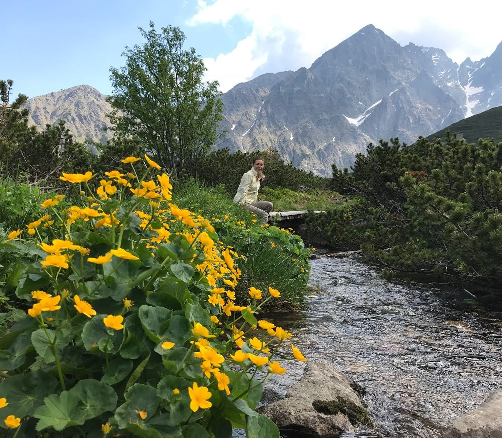

About me
Diana TothSo, while trying to find the best description of myself, I had this idea that I could write a few words about me in a +/- comparison, or The +, But – self description. So here it is. I am very technical with anything regarding work or professional activities, But I also need diversity. Having developed analytical skills during my studies and throughout my career, I consider myself very good with numbers and technical data, I have attention to detail and I enjoy solving problems. However, my activities need to constantly change or to adapt so as not to get into a standard work routine; in my case, diversity brings productivity. I am outgoing and a nature lover, But the context needs to be right. I absolutely love going on hikes, spending time outdoors, in the mountains preferably, but I enjoy this the most if the group of people that accompany me has the same mindset. This is strictly regarding my spare time, when I need to free my mind from work; in a professional environment, I totally understand that people have different approaches, work styles and priorities, and I am quite fond of learning from them, understanding their needs and finding common ground in working out solutions for our tasks. As a follow-up for the description above, I’ve proved to myself and others that I have leadership capabilities. So, I am a leader, But I can also follow directions properly. During my activities as an engineer, I used to take initiative in many areas of the projects I worked on and most likely this is the reason why I was promoted to lead engineer. I am the person who asks why, why that way and why not this other way that requires a smaller use of our resources. This of course involves cooperation and one of my favorite parts is being actively involved in a team because nothing is more satisfying than seeing a group of people with different values and backgrounds that work together and succeed in reaching a common goal. I love to jog, But I am also quite lazy sometimes. I mean, who isn’t ? Sometimes I find myself wanting to go out to exercise and I have this internal conflict between my will to work out and my comfortable self that prefers watching TV series indoors. I usually end up going for that jog, which speaks to my ability to prioritize and to overcome obstacles in order to reach my goal.
Me in Tatra Mountains
Nobody’s perfect, everyone has their flaws. I think that knowing the + and the – about yourself is absolutely crucial both in your personal and professional life. Sometimes it’s about accepting the -, not correcting it. Or to focus on the +, even if the – exists. So this me.